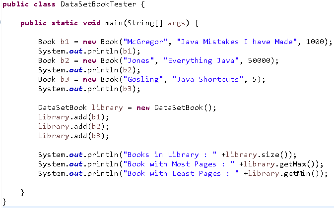

Announcements
Collaboration
Getting Started
Courses
Introductions
Every once in a while, a student asks us "why are you here?" It's a fair question. Each computer scientist has his or her own reasons. Some are engineers, and want to build stuff. Some are mathematicians, and the mathematical underpinnings of the discipline are very rich. Others are scientists and want to discover new things.
For an easy 100 on a lab, introduce yourself. To get credit, you must address each of the following topics:
1. An introduction; what should we know about you?
2. Three or four sentences reacting to these observations from a former Wake Tech CS instructor (in that attached Word document).
3. Two or three sentences on why you are here.
Use this discussion board. You'll have to create a thread.
Write a class Employee with a name and salary. Have (at least) getters for name and salary. Whether you have setters or some other mechanism to set name and salary is up to you. Employee should be in package edu.waketech.csc251.hr.person.
Make a class Manager inherit from Employee. Add an instance variable department of type String. Manager should be in package edu.waketech.csc251.hr.mgmt.
Make a class Executive inherit from Manager. Executive salaries are calculated differently the Employee or Manager salaries. An Executive's salary is the sum of the salary he (or she) gets as an Employee, plus a bonus. The bonus is expressed as a ratio that is multiplied by the Executive's Employee salary. For example, if an Executive's base salary (i.e., the salary as an Employee) is $230,000, and the Executive has a bonus of 0.2, the Executive's (true) salary would be $230,000 + $230,000 * 0.2. Executive should have a getSalary method, a setBonusRate method to set the bonus rate. Executive should be in package edu.waketech.csc251.hr.mgmt.
Supply toString methods for all classes.
All instance variables must be (as usual) private.
Supply a test program that test all classes and methods. The tests should include (but not be limited to) tests such as
Employee dilbert = new Employee(...
System.out.println(dilbert);
Employee pointyHairedBoss = new Manager(...
System.out.println(pointyHairedBoss );
Employee clueless = new Executive(...
System.out.println(clueless);
Which toString method is called in each of these cases? All test code should be in package edu.hr.test.
Grading Elements:
- Program contains public classes Employee, Manager, Executive and a tester
- Each class is in its specified package
- The specified inheritance is implemented
- Each class' specified instance variables are implemented
- No instance variables of a superclass are duplicated in a subclass
- All instance variables are private
- Employee has a toString method, all subclasses override toString
- Subclasses leverage superclass for state and behavior as much as possible
DataSetBook Subclass
Attached Files:Lab Inheritance Starter zip file (376.939 KB)
The attached zip file contains a DataSetBook class that holds Book objects. Rewrite DataSetBook so that it uses inheritance, and has no instance variables. DataSetBook should leverage its superclass to the fullest possible extent while maintaining its existing behavior. Write a tester class with only a main method to test DataSetBook.
Extract the doc folder (browsers don't work inside a zip file) and open doc\index.html for more documentation of DataSetBook, and more explanation of what changing DataSetBook to use inheritance means.
Grading Elements:
- DataSetBook is a public class that uses inheritance to implement its behavior
- DataSetBook has no instance variables
- Book is unchanged
- DataSetBook leverages its superclass as much as possible
- A public tester class with a main method demonstrates the function of DataSetBook
Use This tester main class:
Submit Your Asignment